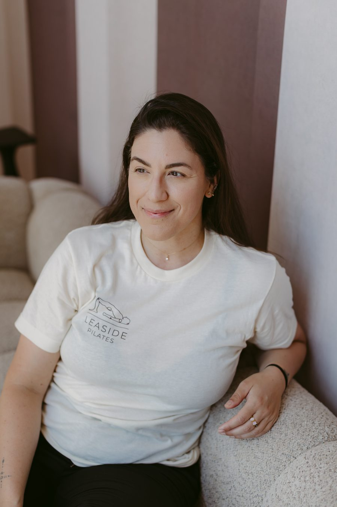
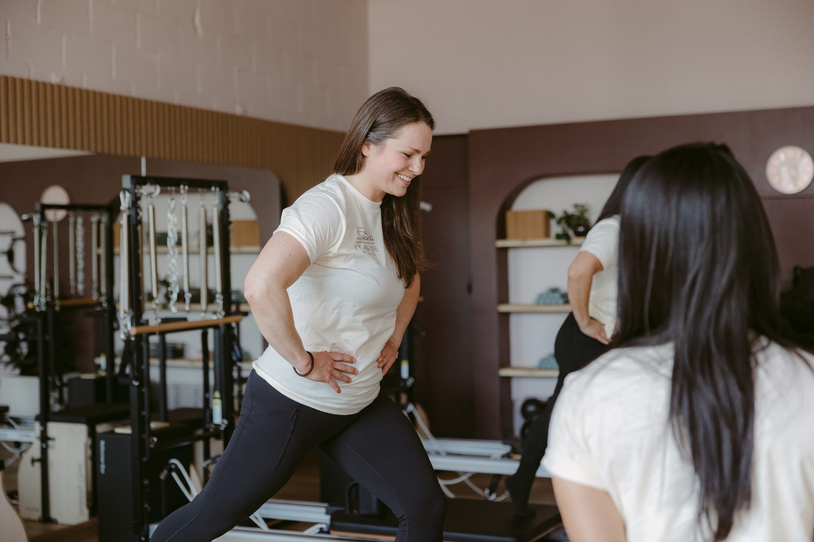
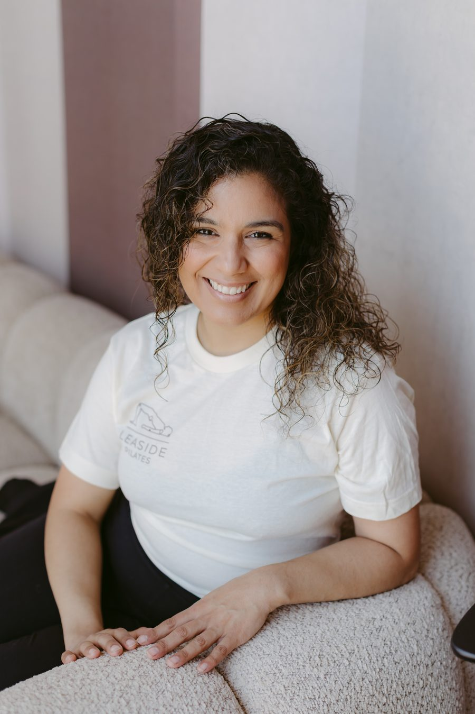
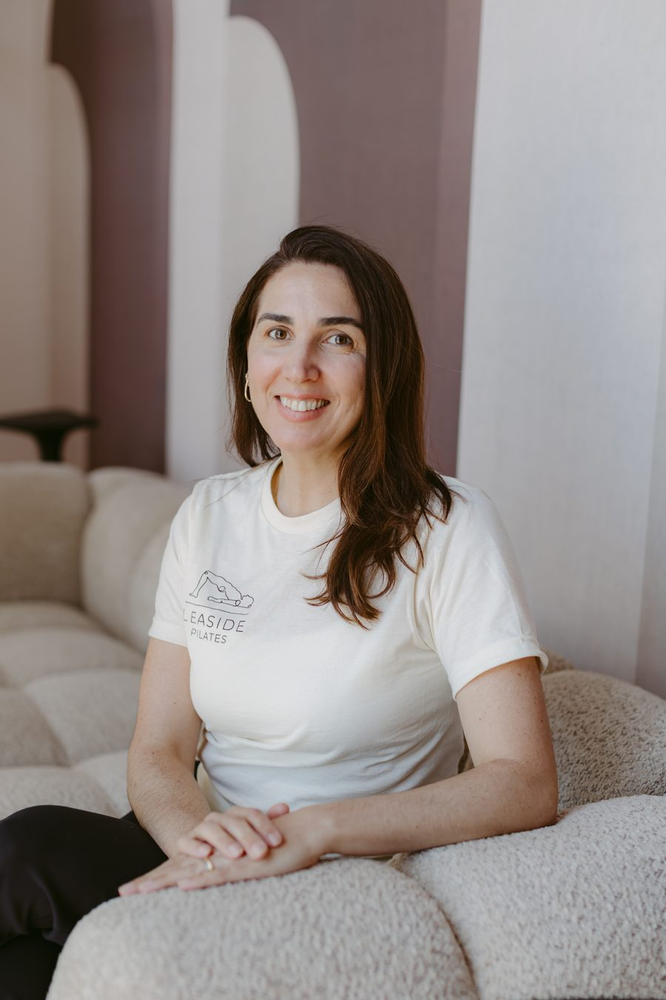
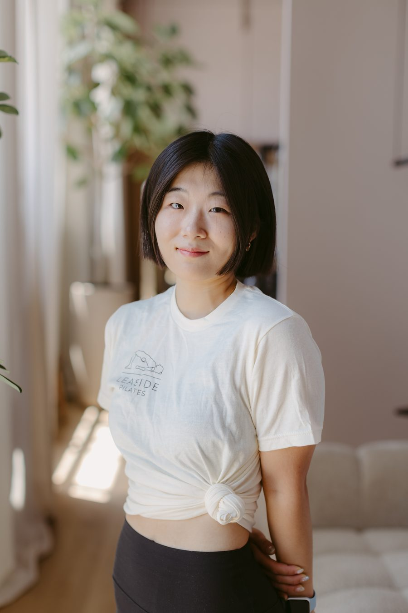
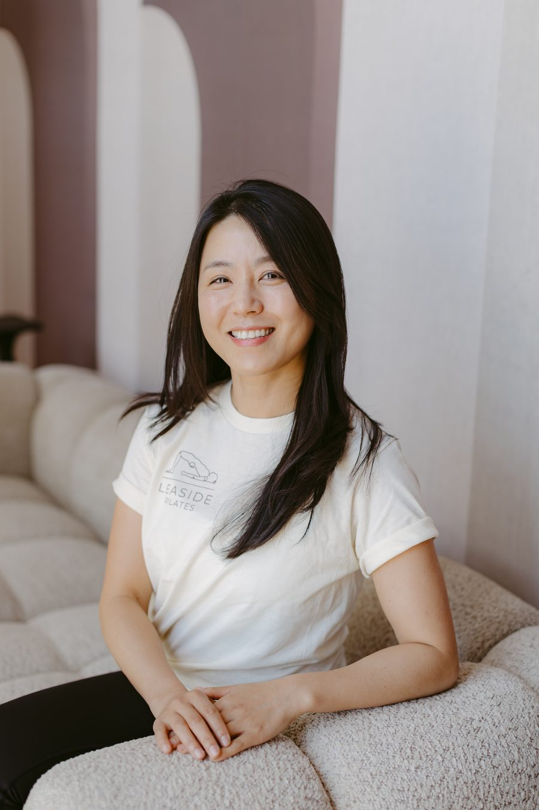
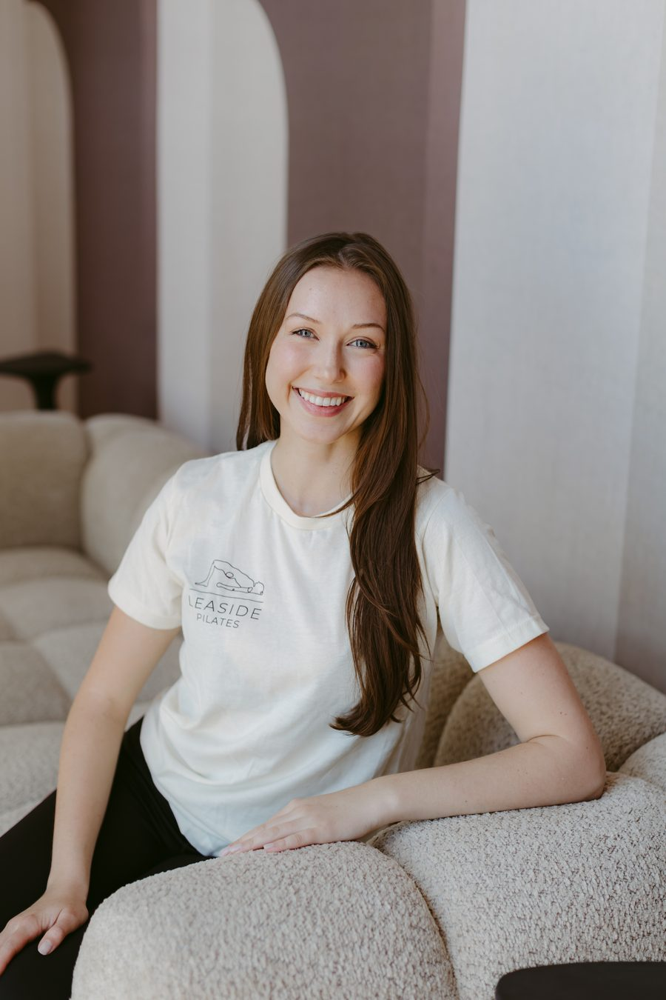
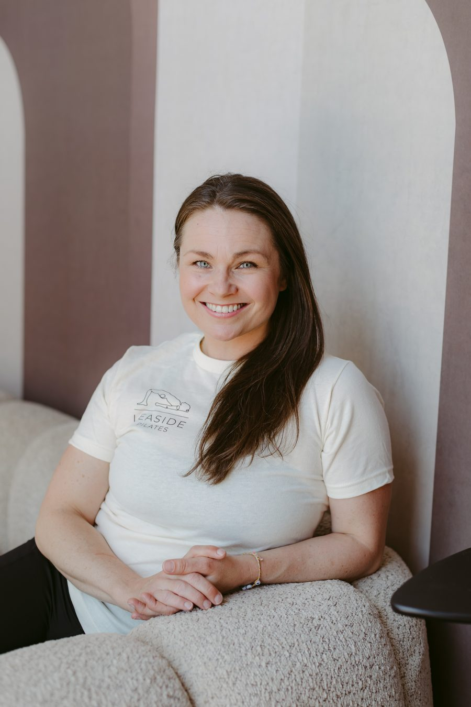
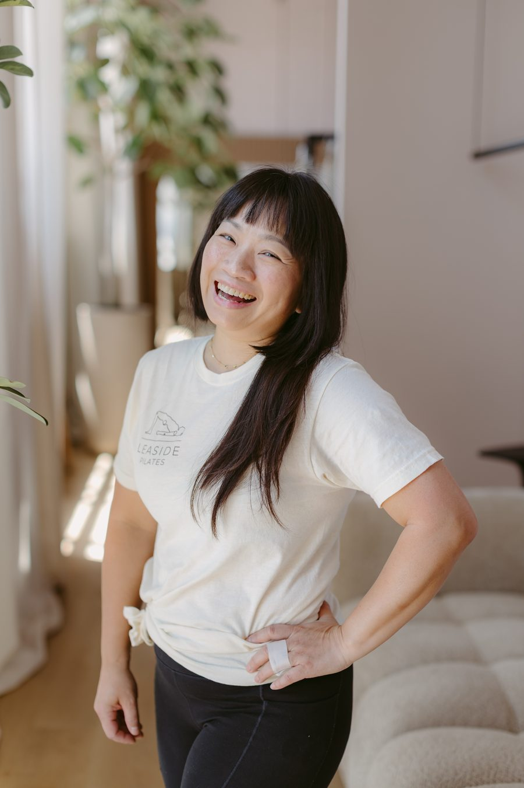

Iva M.
Founder · Pilates & GYROTONIC® Teacher
Teaches & specializes in: Pilates, GYROTONIC®, whole-body movement, osteopathy-informed training
Bright, spacious, and fully equipped — Leaside Pilates is a welcoming home for movement in the heart of Toronto.

Leaside Pilates provides Pilates and Gyrotonic® services across two dedicated units at the same location. Unit 108 is for group classes; Unit 109 is for private, duo, and trio sessions.
We serve adults across Leaside and surrounding Toronto neighbourhoods — from complete beginners to experienced clients, busy professionals and parents, active and older adults, and anyone returning to movement after injury or surgery.
See how to get startedExperienced, knowledgeable teachers who tailor every session to your body and goals.

A welcoming, boutique studio in the heart of Leaside.

Teaches & specializes in: Pilates, GYROTONIC®, whole-body movement, osteopathy-informed training

Teaches & specializes in: Prenatal & postnatal Pilates, therapeutic Pilates

Teaches & specializes in: Rehabilitation, postural alignment, injury recovery (Physiotherapist)

Teaches & specializes in: STOTT Pilates, body awareness, habit-building, injury recovery

Teaches & specializes in: GYROTONIC®, Fascial Stretch Therapy, women's health, pre/postnatal care

Teaches & specializes in: Dance-informed movement, alignment, breathwork, all levels

Teaches & specializes in: Dance & movement-based Pilates, creative sequencing, yoga

Teaches & specializes in: Polestar Pilates, active aging, strength & mobility
Teaches & specializes in: STOTT Pilates, chronic & therapeutic conditions (MS, Parkinson's, scoliosis)
Teaches & specializes in: Rehab-focused Pilates, alignment, reformer, 40+ years of movement
Teaches & specializes in: Post-rehab Pilates, Rolfing® structural integration, physiotherapy background
Teaches & specializes in: STOTT Pilates, posture, strength, mobility, movement quality
A few of our instructors are having their studio photos taken soon — full bios are already here.
The best way to understand the studio is to experience it. Book your first visit today.